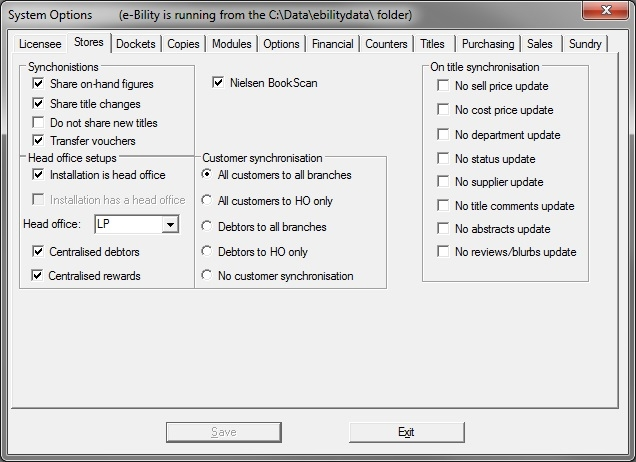

| |
|
System Options - Stores
|
Top |

| · | These checkboxes are used to prevent certain title master fields being updated when synchronising product information. If you select "No abstracts" or "No blurbs/reviews", the data from those fields will not be dispatched to other stores. If the data has been sent by other stores, it will be ignored.
|
| · | Ticking the other checkboxes ("No prices" etc) will only cause e-Comms to ignore the relevant data sent from other stores. It will still send that data. So you will need to set these options at each store.
|
| |